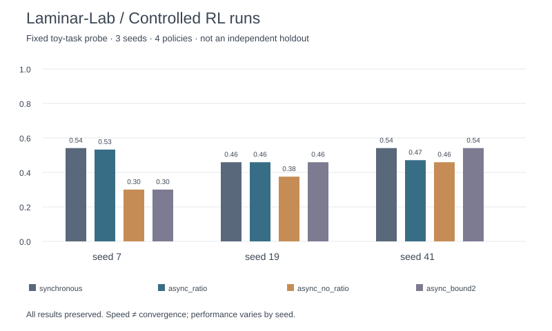

Introduction
这不是把异步流程画成一张图：本项目实际运行一个小型自回归策略的采样和 RL 更新，让 rollout 与 learner 解耦，逐条记录版本、旧策略概率与消费时陈旧度。核心研究问题是：取消全局 barrier 后，系统更快是否真的学习更好？
公开依据是 Laminar 论文 v1 和 官方开源仓库。论文强调 trajectory-level asynchrony、CPU Relay 与同版本 repack。本项目仅检验可在本机运行的机制，不宣称复现 UCX、RDMA、vLLM、GPU KV 迁移或 1024 GPU 成绩。
Overview

Method
四回答同版本组
FIFO / 背压
Group advantage / KL
同版本 packing
13→24→4 tanh MLP，先监督学习 copy，RL 学习每符号加一取模。每 prompt 四回答，奖励为符号匹配率；组内标准化 reward advantage。四种策略、三个种子，每次 40 learner updates，每个 batch 六个组、四次真实梯度更新。reference 冻结、每个轨迹 snapshot 固定，所有行为 logprob 和模型 hash 保留。
token ratio clipping 只是一种 GRPO-like surrogate：不是无偏 full-sequence IS，不是 V-trace，不作通用收敛保证。主训练按完整 prompt group 入队，比官方逐 trajectory admission 更粗。同步与异步都使用四个 worker；透明注入每 token 1.5ms I/O 延迟和每 update 2ms 控制开销。
Experimental Results
下面逐种子展示 controlled 修正版全部运行。原探索批次异步含 worker 延迟倍率，不能作为公平比较；保存在 artifacts/runs。修正版移除倍率、纠正无 ratio 损失记录，单独运行而非回填旧数字。
| Seed | Policy | Fixed probe token score | Elapsed incl. injected delays (s) | Max consume staleness | Discarded groups |
|---|---|---|---|---|---|
| 7 | synchronous | 0.541 | 1.117 | 0 | 0 |
| 7 | async_ratio | 0.532 | 0.701 | 5 | 0 |
| 7 | async_no_ratio | 0.300 | 0.635 | 5 | 0 |
| 7 | async_bound2 | 0.300 | 0.644 | 2 | 22 |
| 19 | synchronous | 0.459 | 1.233 | 0 | 0 |
| 19 | async_ratio | 0.459 | 0.651 | 5 | 0 |
| 19 | async_no_ratio | 0.375 | 0.635 | 5 | 0 |
| 19 | async_bound2 | 0.459 | 0.668 | 2 | 9 |
| 41 | synchronous | 0.541 | 1.167 | 0 | 0 |
| 41 | async_ratio | 0.471 | 0.645 | 3 | 0 |
| 41 | async_no_ratio | 0.459 | 0.702 | 4 | 0 |
| 41 | async_bound2 | 0.541 | 0.697 | 2 | 12 |
probe 字段由原始 heldout_* 字段读取：实际是已反复监控的固定学习探针，有限 prompt 重叠比例见 audit.json，不能称独立测试。Elapsed 包含明确注入的 sleep 与 Python overhead，不是 GPU throughput。
What did not work
所有策略均未稳定学会四符号任务，种子和陈旧度策略带来明显差异。异步 ratio 的速度、学习分数和显式 bound 的丢弃量须分别看；不写“异步必然更好”。同语法确定性 parser 能达到全正确，说明神经网络并非此玩具任务的必要方案。
Systems Evidence
300 个自写 packing 场景核验版本隔离、双容量约束与 cache/request 守恒。另直接执行固定官方 revision 的未修改 pure repack planner，100 个场景检查同版本与 KV 上限。官方当前 planner 和论文双约束不完全相同，因此独立报告；没有执行官方 RL 完整 test suite。
6 次真实 os._exit 子进程退出后重启，逐一验证 SQLite 已提交 prefix、不可变权重、同版本完整轨迹和唯一 experience 记录。恢复重算 prefix，不是假称 GPU KV 直接迁移；本地唯一插入不是分布式 exactly-once。
Interactive Demo
打开 Evidence Explorer，可选运行、查看每轮 reward / ratio / KL / clip、轨迹组与实际时间事件，并导出当前证据。页面内联原 JSON，离线可打开；它不假装在浏览器重新执行 Python 训练。
Limitations & Reproducibility
30 次小模型实训包含 12 次旧探索、12 次公平控制及 6 次取消 token sleep 的敏感性；同任务、有限种子、无独立泛化结论。MLP 不是大语言模型，暂未接入公开大模型 LoRA-RL；本机无 CUDA/RDMA 集群，完整 Laminar 部署没有完成。前沿框架学习、实跑机制和本人既往字节业务经历严格分开。
下一步需要独立长序列语法、真正可训练的小型语言模型、逐 token partial store、relay 读栅栏与完整故障训练恢复，而不是多画一个界面。源码、协议与边界全部公开；官方固定版本：19333d00b8d794a145a07b6c082a1fa3cf84c42e。
Delay Sensitivity & Length OOD
取消每 token 延迟，仍保留每 update 2ms 控制开销。另6次真实训练：异步 rollout 更快带来最高消费陈旧度5，部分种子学习更差。这是同已见语法的追加敏感性，不是新独立实验任务。
| Seed | Policy | Fixed probe token score | Elapsed incl. injected delays (s) | Max consume staleness | Discarded groups |
|---|---|---|---|---|---|
| 7 | synchronous | 0.541 | 0.686 | 0 | 0 |
| 7 | async_ratio | 0.413 | 0.735 | 5 | 0 |
| 19 | synchronous | 0.459 | 0.674 | 0 | 0 |
| 19 | async_ratio | 0.232 | 0.706 | 5 | 0 |
| 41 | synchronous | 0.541 | 0.680 | 0 | 0 |
| 41 | async_ratio | 0.135 | 0.718 | 5 | 0 |
冻结12个 controlled 模型，对12/16长度做128个同一新探针；训练长度最大8，因此没有完全相同 prompt。所有条件均未稳定泛化，确定性 parser 仍全正确。该追加探针在读过初始结果后运行，不宣称盲测。
| Run | Length OOD token score | Exact sequence |
|---|---|---|
| 19-async_bound2.json | 0.507 | 0.000 |
| 19-async_no_ratio.json | 0.408 | 0.000 |
| 19-async_ratio.json | 0.506 | 0.000 |
| 19-synchronous.json | 0.507 | 0.000 |
| 41-async_bound2.json | 0.493 | 0.000 |
| 41-async_no_ratio.json | 0.507 | 0.000 |
| 41-async_ratio.json | 0.499 | 0.000 |
| 41-synchronous.json | 0.493 | 0.000 |
| 7-async_bound2.json | 0.249 | 0.000 |
| 7-async_no_ratio.json | 0.249 | 0.000 |
| 7-async_ratio.json | 0.501 | 0.000 |
| 7-synchronous.json | 0.493 | 0.000 |
Atomic Learner Recovery & Paired Replay
本轮不再只恢复冻结 rollout：实际终止9个学习进程，分别在快照事务之前、事务内部和提交之后退出；SQLite 单事务绑定新策略快照与消费账本。三种子均恢复至与不中断基线相同的模型指纹及72个唯一消费组。使用确定顺序批次隔离崩溃语义，不冒充实时异步集群恢复，SGD无动量优化器状态。
另从三种子 async_ratio 原记录取完全相同样本、行为 logprob 和消费顺序，配对重新优化 ratio 与 no_ratio。ratio 逐路径重构原冻结最终模型；两者分数并非一致优劣，种子41无ratio更高。这个实验隔离损失机制，不能解释为在线异步的随机对照或通用算法优势。
| Seed | Ratio / fixed probe | No-ratio / same samples | Exact ratio reconstruction |
|---|---|---|---|
| 7 | 0.532 | 0.532 | Verified |
| 19 | 0.459 | 0.232 | Verified |
| 41 | 0.471 | 0.768 | Verified |
上述固定探针仍有已披露prompt overlap，不能作为泛化证明。9个真实崩溃合约与6次配对优化轨迹，分别保存在 durable-learner.json 和 paired-replay.json。